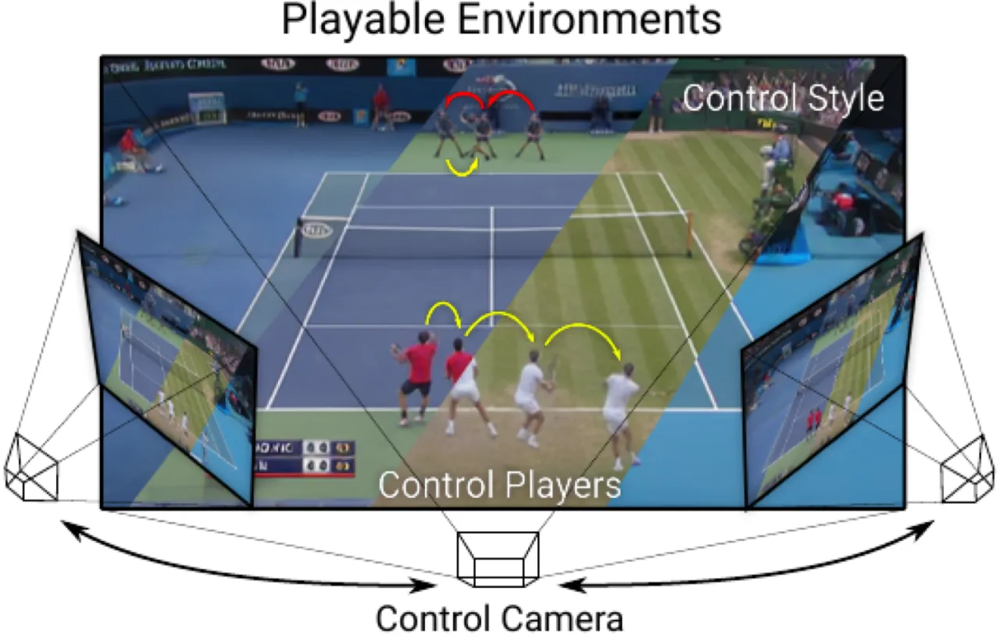
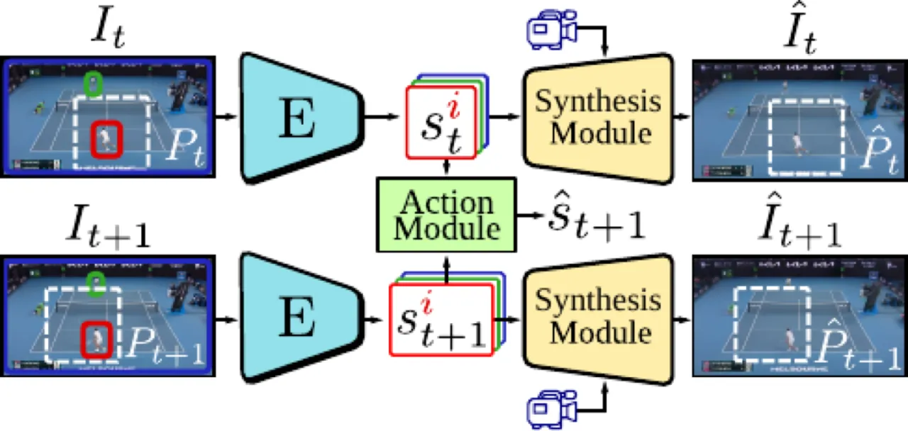
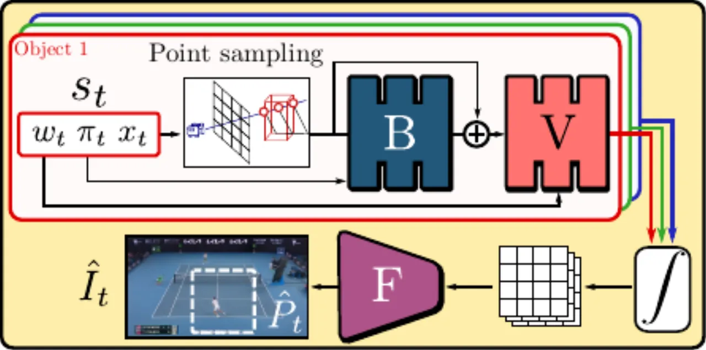
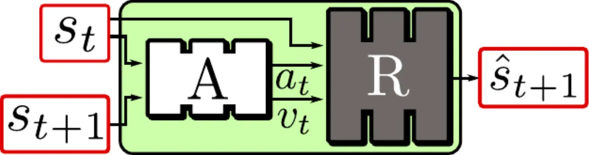
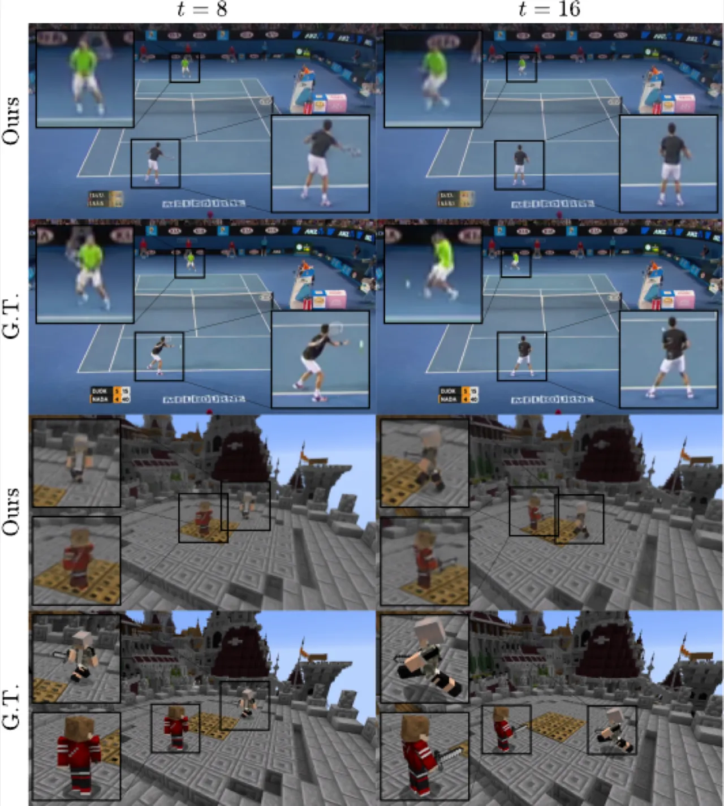
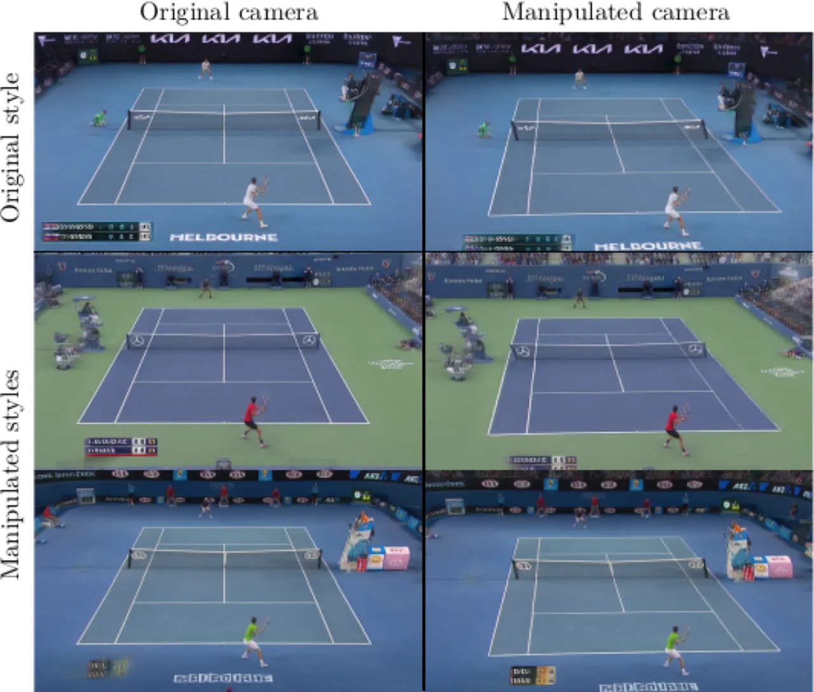

本文提出 Playable Environments (PE) 框架——给定单张初始帧，用户可通过离散动作控制场景中每个玩家的运动、自由操控相机视角，并为任意对象指定外观风格，从而像玩电子游戏一样与真实视频场景交互。系统在单目视频上无监督训练，无需任何动作标注。
视频记录的是静态的事件副本。人们希望能像观看网球比赛时那样，随意改变球员的动作、调整相机角度、切换场地风格——这需要在三维空间中理解并重建场景，同时提供直观的交互界面，如同操控电子游戏。现有方法各有局限：
"We call these representations Playable Environments (PE)... [they] encapsulate and extend representations built by several prior image or video manipulation methods."

论文定义了可玩环境需满足的六项核心特性：
框架采用编码器-解码器结构，核心由两个模块构成：Synthesis Module（合成模块）负责从场景状态渲染图像；Action Module（动作模块）负责在状态空间中学习并预测用户动作。训练分两阶段进行，全程仅依赖重建损失，无需人工动作标注。

合成模块以 NeRF 为基础架构，实现相机控制 ⑵。每个对象由独立的 MLP V 参数化的 feature field 建模，各 field 以对象位置为中心、受 bounding volume 约束，从而支持多对象建模 ⑶。
为处理可变形对象（如人体）⑷，引入 ray bending network B：给定姿态描述子 π 与采样点 x_p，通过 B 将其映射到正则空间坐标 x̃_p = x_p + B(x_p, π_t)，从而在正则空间中编码对象几何。
为建模外观多样性 ⑸，受 AdaIN 启发，在 V 的 feature prediction branch 中嵌入风格调制层：h̃_t = γ(w_t) h_t + β(w_t)，其中 γ, β 为可训练线性层，风格码 w_t 只调制颜色特征而不影响几何。

动作模块由 Action Network A 和 Dynamics Network R 组成。A 给定相邻状态 (s_t, s_{t+1})，输出离散动作 a_t ∈ {1,...,K} 与 action variability embedding v_t；R（LSTM）以 (s_t, a_t, v_t) 为输入自回归预测下一状态。
为使动作与相机朝向一致（符合游戏直觉），Dynamics Network 预测相机坐标系下的位移 Δ，再通过旋转矩阵 M 转换：x̂_{t+1} = x_t + MΔ。

阶段一（合成模块）：用感知损失（VGG perceptual loss）+ L2 像素重建损失训练编码器与合成模块。为避免风格 w 和姿态 π 解耦失败，在每个序列的时间维度上打乱 w 的顺序再送入合成模块。
阶段二（动作模块）：联合优化四项损失——重建损失 L_rec、信息论动作学习损失 L_act（最大化互信息）、Δ-MSE 软损失 L_Δ（同类动作应对应相似位移）、以及对抗 Temporal Discriminator D（判别真实/重建状态序列，促使动作生成真实肢体动作）。
在三个数据集上评估：Tennis（43场网球赛，12h真实视频）、Minecraft（1h合成视频，宽视角运动）、Minecraft Camera（相机运动序列，提供 novel view 真值）；另采用 Static Tennis（PVG基准）做方法对比。
在 playable video generation 设定（无显式相机控制）下，与 MoCoGAN、SAVP、CADDY 等方法对比：
| 方法 | LPIPS ↓ | FID ↓ | FVD ↓ | Δ-MSE ↓ (%) | Δ-Acc ↑ (%) | ADD ↓ (px) | MDR ↓ (%) |
|---|---|---|---|---|---|---|---|
| MoCoGAN | 0.266 | 132 | 3400 | 101 | 26.4 | 28.5 | 20.2 |
| SAVP | 0.245 | 156 | 3270 | 112 | 19.6 | 10.7 | 19.7 |
| CADDY | 0.102 | 13.7 | 239 | 72.2 | 45.5 | 8.85 | 1.01 |
| Ours | 0.089 | 15.3 | 237 | 32.8 | 68.1 | 9.47 | 0.15 |
本方法在动作质量指标（Δ-MSE、Δ-Acc）和视频重建质量（LPIPS、MDR）上均显著优于 CADDY，动作与球员运动的一致性大幅提升。
在完整 PE 设定下（多对象、真实相机运动），与基于 CADDY 的多种变体比较。本方法在 Tennis 上 LPIPS=0.181、FVD=485、Δ-MSE=0.293%、Δ-Acc=95.7%、MDR=4.84%，全面超越所有基线；在 Minecraft Camera（相机控制）上 LPIPS=0.242、FID=29.2，而最佳基线 FID≥244——本方法能真正从新视角合成场景，而 CADDY 各变体由于缺乏显式相机模型，无法处理 novel view 生成。
| 方法 | Tennis LPIPS ↓ | Tennis FVD ↓ | Tennis Δ-Acc ↑ (%) | Tennis MDR ↓ (%) | MC-Cam LPIPS ↓ | MC-Cam FID ↓ |
|---|---|---|---|---|---|---|
| CADDY (i) | 0.313 | 877 | 42.6 | 36.9 | 0.747 | 306 |
| CADDY (iii) best | 0.213 | 727 | 57.5 | 11.7 | 0.669 | 244 |
| Ours | 0.181 | 485 | 95.7 | 4.84 | 0.242 | 29.2 |
在 Tennis 数据集上的用户研究中，采用 Fleiss' kappa 衡量动作一致性：本方法 kappa=0.444，最佳基线 kappa=0.353，说明本方法学到的动作空间更清晰、更易于用户一致识别。


合成模块消融（Minecraft）：逐步加入 Multi-object（⑶）、非刚性变形 π（⑷）、风格调制 w（⑸）、Feature Renderer F（⑹）。结果表明：deformation 和 style modulation 对精确合成均不可缺少（⑷⑸），但单独使用会因定标噪声导致模糊；引入 Feature Renderer 后，LPIPS 从 0.350 降至 0.193，FID 从 61.0 降至 16.5，FVD 从 465 降至 289，显著恢复清晰度。
| 变体 | Multi ⑶ | π ⑷ | w ⑸ | F ⑹ | LPIPS ↓ | FID ↓ | FVD ↓ |
|---|---|---|---|---|---|---|---|
| (a) NeRF-like | — | — | — | — | 0.735 | 376 | 2548 |
| (c) +Multi+π | ✓ | ✓ | — | — | 0.648 | 301 | 1818 |
| (e) +Multi+π+w | ✓ | ✓ | ✓ | — | 0.350 | 61.0 | 465 |
| Full | ✓ | ✓ | ✓ | ✓ | 0.193 | 16.5 | 289 |
动作模块消融：去掉 Temporal Discriminator D 会导致 FVD 显著上升（动作序列中肢体运动不真实）；Δ-MSE 损失 L_Δ 对动作空间质量有正向影响；相机相对坐标预测（Rel.）对于生成视角一致的动作效果至关重要。
方法假设环境几何在整个训练集中保持不变，因此无法在不同几何的环境中训练（例如在多个不同球场之间）。
Tennis 数据集中只有相机旋转而无相机平移，导致场地几何恢复不适定。作者为此施加"flat world"先验对几何进行正则化，推理时允许更大范围的相机操控，但代价是当相机位置偏离训练集时背景会被投影到平面上，产生视觉伪影。
球员肢体、球拍等薄而快速运动的部件仍存在模糊或部件缺失伪影。Tennis 数据集中频繁的运动模糊、小至几像素的肢体、定标噪声均加剧了这一问题，Feature Renderer 只能部分缓解。
动作空间以对象位移 Δ 为核心学习目标，与位置变化弱相关的动作（如挥拍动作）难以被显式控制，用户只能间接影响而无法精确指定。
推理时各对象独立动画，无法捕捉对象间交互（如两位球员同时挥拍击球），可能产生不合理的联合动作。